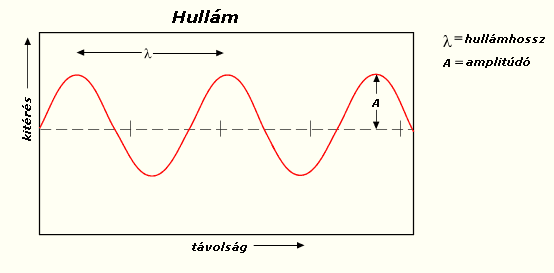

A trigonometrikus függvények vagy szögfüggvények eredetileg egy derékszögű háromszög egy szöge és két oldalának hányadosa közötti összefüggést írják le. A szögfüggvények fontosak többek között a geometriai számításoknál, különféle mozgások és a periodikus jelenségek leírásánál, és a műszaki élet számtalan területén.
Lényegében a szinusz függvény (sin) az α szöggel szemben lévő ("a" oldal) a befogó és a c átfogó hányadosa, mint ahogy az alábbi képen is látható:
A szögeket gyakran fokokban adjuk meg, de radiánokban is megadhatjuk. Amikor azt mondjuk, hogy „minden szögnek” létezik szinusza, azt úgy is érthetjük, hogy minden valós számhoz (mint radiánban megadott szöghöz) tartozik pontosan egy szinuszérték. A szinusz szögfüggvényt és a többi szögfüggvényt is tekinthetjük egy-egy valósszámú típusú függvénynek. Az eddig megismert függvények után újabb függvényeket ismerünk meg, a trigonometriai függvényeket. Az függvényt szinuszfüggvények nevezzük.
Mint említettem a trigonometria nagy eséllyel csillagászati célok miatt született meg így nézzük meg gyakorlatban is, hogy őseink milyen problémákat oldottak meg a fondorlatos szinusz tétellel.
Kezdjük is első problémánk hogyan lehet megmérni azt hogy egy csillag milyen tévol van a földtől? (Csatoltam képet, hogy jobban eltudjuk képzelni az emberek többsége végülis vizuális tipusú)
A csillag távolságának megállapításához megmérjük, hogy milyen szögben látszik a csillag a Földről nézve nyáron és télen is (ezt meg is felezhetjük akár). Ez alapján kitudjuk számolni a szöget. Szerencsére azt tudjuk hogy a Föld és a Nap közötti távolság úgy durván ~ 150 millió km és az α feltételezzük legyen 1o. És ez a két adat éppen elég is, hogy használhassuk Szinusz függvényünket. Ezután nincs is más dolgunk behelyetesítjük az adatainkat és meg is van az eredmény nagyjából ~ 8823 millió kilométerre van a csillagunk. A számolást és az ábrát képen vezettem le feljebb.
A trigonometriát valószínűleg asztronómiai célokra találták fel. A trigonometria kezdeteit az ókori Egyiptom, Mezopotámia és az Indus-völgyi civilizációig lehet követni több, mint 4000 évvel ezelőttig. A fokokban, percekben és másodpercekben történő szögmérés a babiloni hatvanas számrendszerből ered. A trigonometria szögfüggvényes alkalmazása a hellenizmus korában élt görög matematikustól, Hipparkhosztól származik kb. i. e. 150-ből. Bővebenn itt.
Egy egyik oldala 10 cm, a rajta fekvő két szög 35o és 44o mekkora a másik két oldala?
Ezeket tudjuk:
a = 10 cm
β = 35o
γ = 44o
Egy két oldala 8 cm és 10 cm, a 10cm-es oldallal szemközti szög 75o. Hatázozd meg a hiányzó oldalakat!
Ezeket tudjuk:
a = 8 cm
α = 75o
b = 10 cm
Egy két szöge 20o és 126o. A legkisebb szöggel szemközti oldal 12 cm. Mekkora a másik két oldal?
Ezeket tudjuk:
β = 126o
α = 20o
c = 12 cm